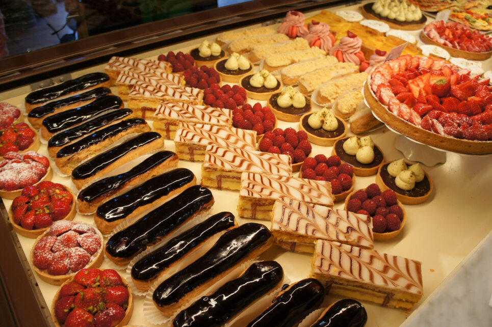

Pâtisserie Lenté
About us:
The Mission of Pâtisserie Lenté is to create a magical experience that will enchant you with every delightful bite of our luscious, elegant and artistic French pastries.
What is pâtisserie?
Pâtisserie is used to describe French pastries and the pastry shop they are sold in. Although the word is used quite liberally in English-speaking countries, in France and Belgium the law restricts its use to bakeries who employ licensed maître pâtissier (master pastry chefs).
Specialty Coffee
We proudly serve Caffe Vita’s delicious coffee blends and single origins. They are pioneers in the Farm Direct movement where coffees are sourced directly from farmers that are committed to sustainable practices. All coffees are roasted to order and delivered weekly by our Brooklyn based roaster.
you can find us at:
33 rue de la République
60600 Clermont
France
